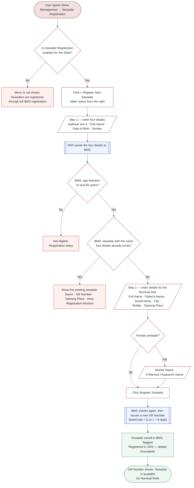
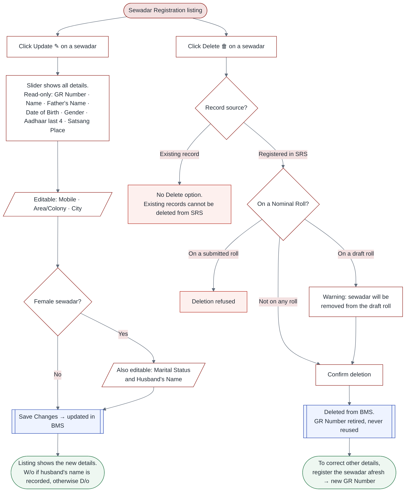

Overview, flowcharts and prototype · v1.4 · 22 Nov 2026 · Zonal IT Team
A Nominal Roll picks its sewadars from the BMS (Badge Management System) database. In some States, BMS is not yet in use for day-to-day badge work. Their sewadar records were loaded into BMS once and cannot be refreshed, so Satsang Places there have no way to add a new Permanent Badge sewadar or correct a contact detail.
This feature adds a light Sewadar Registration screen under Sewa Management for those States. It registers a sewadar in BMS with only the details a Nominal Roll needs. The remaining details are completed later, when BMS is implemented in that State.
| Area | Rule |
|---|---|
| Who can use it | Satsang Place for its own sewadars; Area Office for all Satsang Places of its Area. No approval step. |
| Scope | Permanent Badge sewadars only. Open Sewadars continue to be added inside the Nominal Roll. |
| What can be updated | Mobile number and address. For a female sewadar, also marital status and husband's name. Nothing else. |
| Other corrections | Delete the entry and register afresh; a new GR Number is issued and the old one is retired. |
| What can be deleted | Only sewadars registered through this screen, and not once they are on a submitted Nominal Roll. Existing records cannot be deleted. |
| Name shown on lists and the Nominal Roll | S/o father's name for a male sewadar; W/o husband's name where recorded; otherwise D/o father's name. |


The prototype is clickable and uses sample data only. Nothing is saved; refreshing the page resets it.